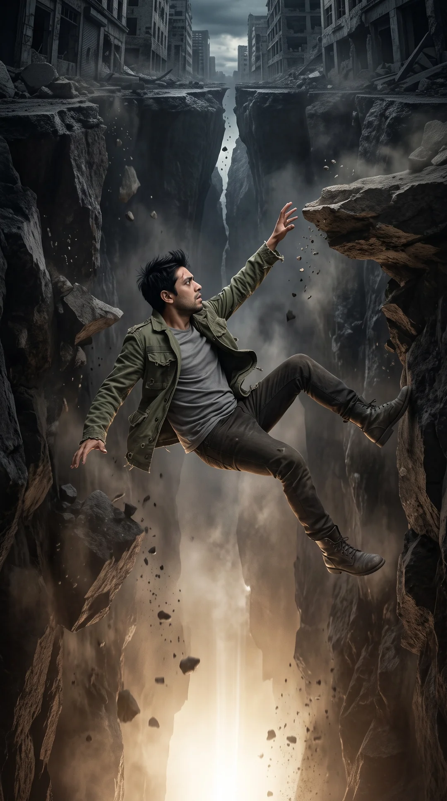
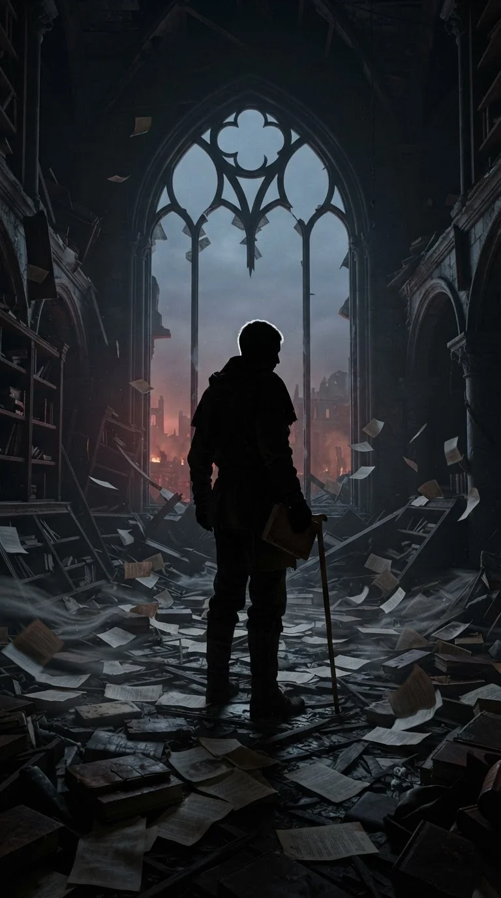
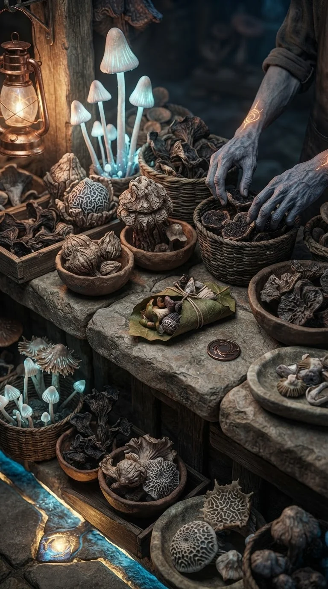
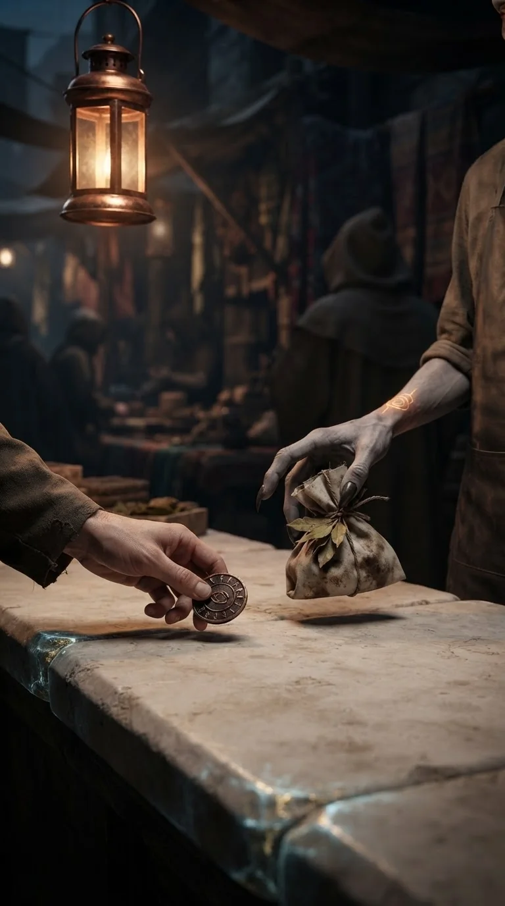
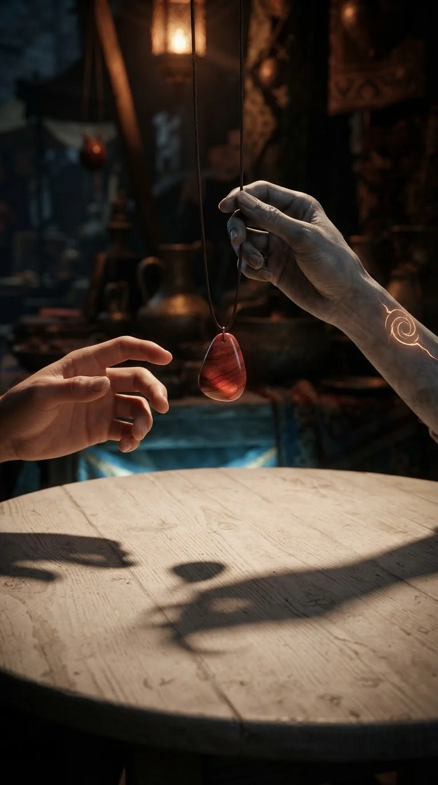
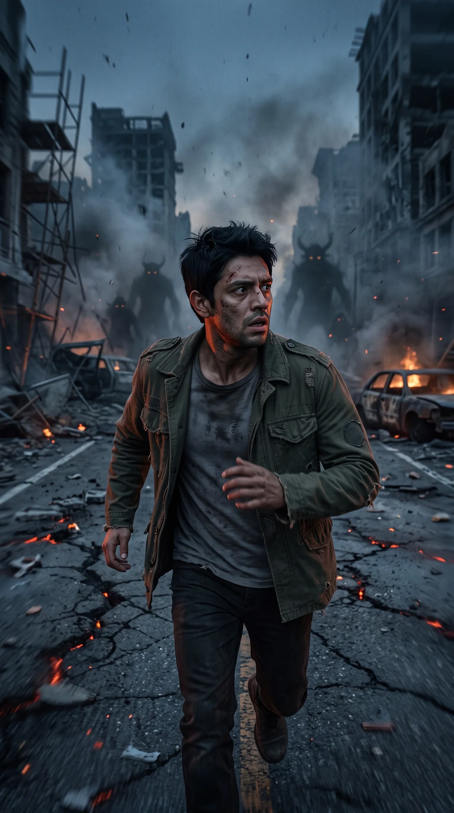
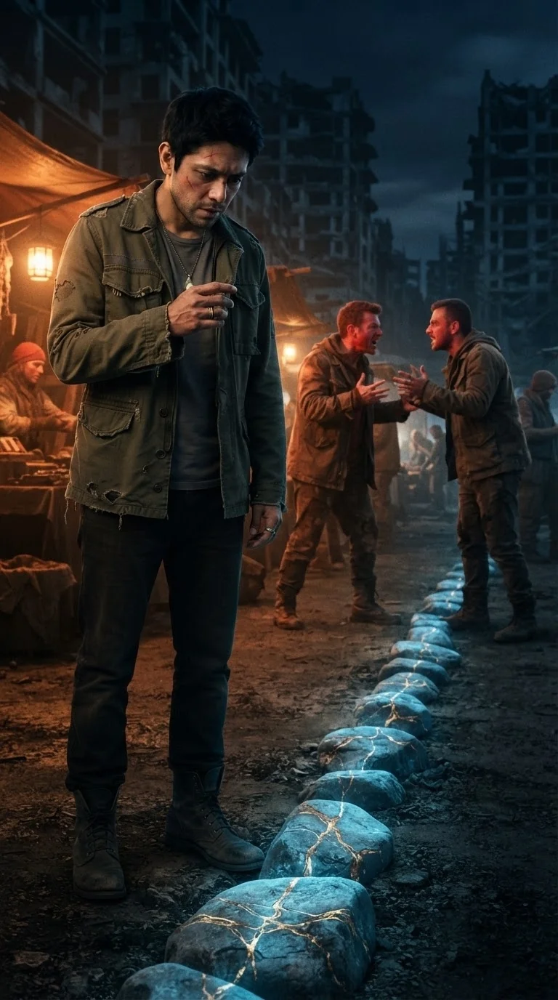
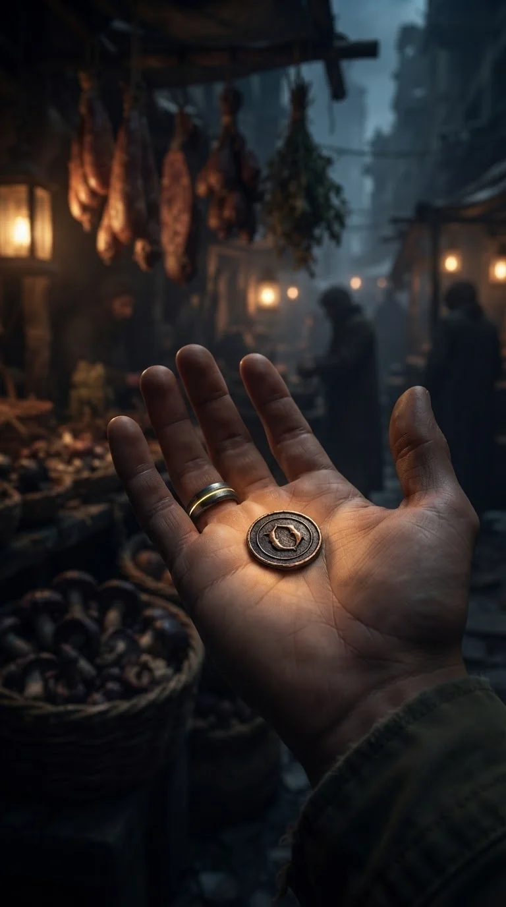
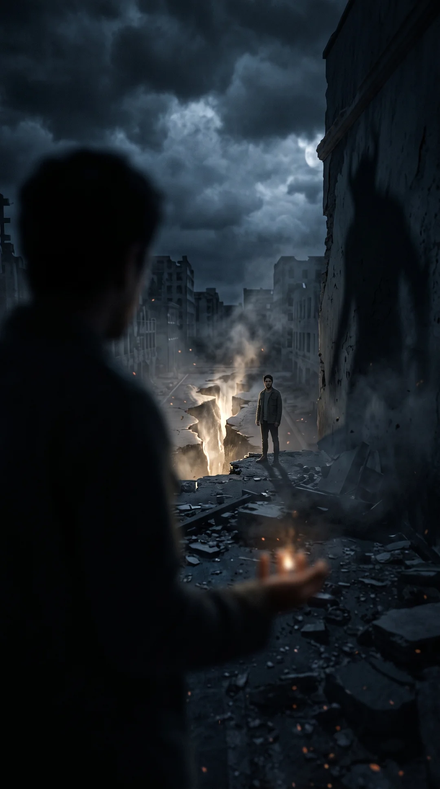
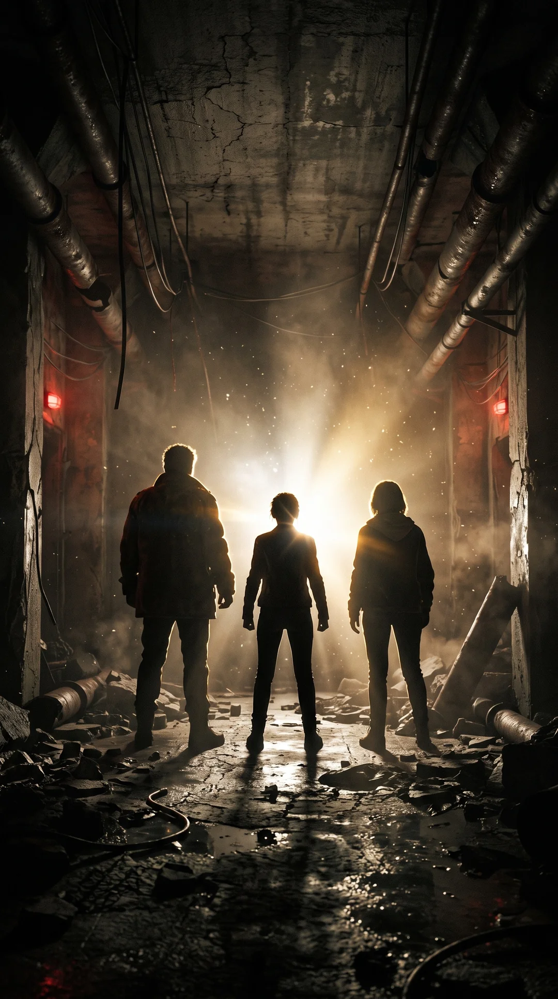

Un Minuto de Paz y Fe
Portal audiovisual de reflexiones espirituales, oraciones temáticas y mensajes de edificación comunitaria diseñados para inspirar, fortalecer y renovar la esperanza cada día.
Quiénes Somos
Una iniciativa comprometida con llevar mensajes edificantes a través de las plataformas digitales.

Palabras que Renuevan el Espíritu
Un Minuto de Paz y Fe nació con el firme propósito de crear un oasis de serenidad en medio del ritmo acelerado de la vida contemporánea. Creemos que una palabra de aliento a tiempo, una oración sincera o un versículo oportuno tienen el poder de transformar vidas, restaurar la paz en los hogares y renovar las fuerzas de quienes más lo necesitan.
A través de nuestra plataforma y canal de publicación multired, producimos reflexiones en formato vertical dinámico y atractivo, transmitiendo principios de fe, esperanza, amor y gratitud a miles de personas en YouTube Shorts, Instagram Reels, Facebook Reels y TikTok.
Nuestros Objetivos
Los dos pilares fundamentales que guían cada uno de nuestros proyectos y producciones audiovisuales.
Difundir semillas de esperanza, consuelo y fortaleza espiritual a través de medios digitales modernos, alcanzando a creyentes y personas en búsqueda de paz interior en todo el mundo de habla hispana.
Producir reflexiones con altos estándares técnicos de imagen, locución profesional, música edificante y respeto pleno a los valores éticos y espirituales que fundamentan nuestra comunidad.
Videos Más Vistos del Canal
Nuestras oraciones y reflexiones devocionales con mayor impacto y visualizaciones en YouTube Shorts.
¿Tienes alguna petición?
Si no lograste llegar a nuestras redes sociales, comparte y coméntanos; estamos dispuestos a ayudarte en oración. Recuerda que, donde más de uno ora, Jesús está presente.
✉️ Cuéntanos tu peticiónMuy Pronto
"Si bien esto no es todo, esperen nuestros próximos lanzamientos: estamos preparando historias bíblicas narradas con un estilo dramático y fantástico."










Síguenos en Redes Sociales
Encuentra nuestras oraciones y reflexiones diarias en tu plataforma favorita.
Contacto y Atención
Si deseas hacernos llegar una sugerencia de temática, tienes alguna consulta sobre nuestra plataforma o deseas contactar a nuestro equipo editorial, puedes escribirnos con toda libertad:
ivar.justiniano.guillen.123@gmail.comRespondemos peticiones y consultas en días hábiles dentro de las 24 a 48 horas.